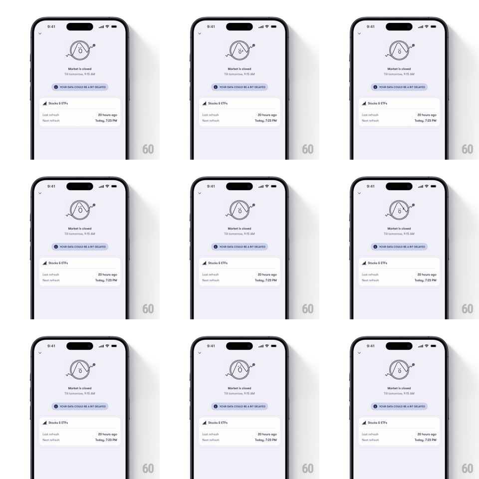

Media
Frame-by-frame

Rebuild this animation 1:1: Fold's market-closed empty state - a line-drawn mascot loops a playful idle animation above a delayed-data notice and a refresh schedule card.

Rebuild this animation 1:1: Fold's market-closed empty state - a line-drawn mascot loops a playful idle animation above a delayed-data notice and a refresh schedule card.
## Integration
Integration: stack-agnostic spec - springs given as stiffness/damping, timed motions as duration + curve; map every value to your framework and animation library of choice.
## Scene
A light-gray screen: centered line-art mascot (a circle-faced character with small arms, drawn in single-weight black stroke), "Market is closed" with "Till tomorrow, 9:15 AM" beneath, a dashed-border pill reading "YOUR DATA COULD BE A BIT DELAYED", and a "Stocks & ETFs" card listing last refresh ("20 hours ago") and next refresh ("Today, 7:23 PM").
## Motion spec
Pattern: looping mascot idle.
- The mascot loops a ~3s idle: it bobs gently (translateY +-4px, 1.5s sine), its arms swing in small arcs (rotate +-10deg, phase-offset from the bob), and every other loop it looks sideways (head/eyes translate 3px, hold 400ms, return).
- Once per ~4 loops the mascot does a trick: a quick spin (rotate 360deg, 600ms, ease-in-out) or a jump (translateY -14px with squash on landing, spring ~420/20).
- The notice pill's dashed border marches slowly (dash offset animating, 8s per cycle) - the only other motion on screen.
- On pull-to-refresh (though closed), the mascot spins once and the card rows shimmer briefly (600ms) before re-settling with unchanged times.
## Calibration
- The line weight of the mascot matches the card icons - the whole screen reads as one illustration system.
- Idle amplitude stays small: this is a waiting room, not a celebration.
## Reduced motion
Mascot static; pill border still.
## Don't miss
- The mascot is pure line art - no fills, no color; the only tint is the pill's dashed stroke.
- Refresh times are the content: muted gray labels, darker values, no animation on the text.